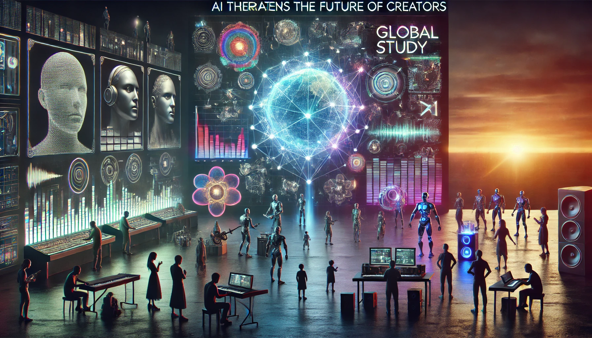
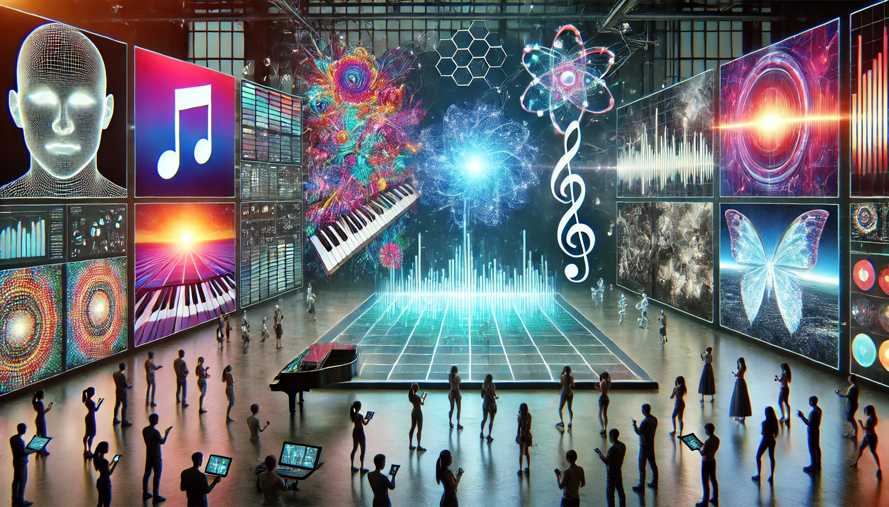
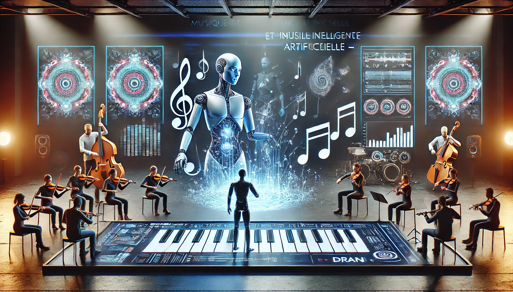
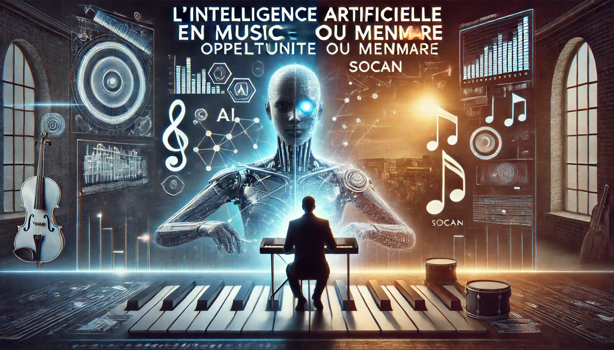
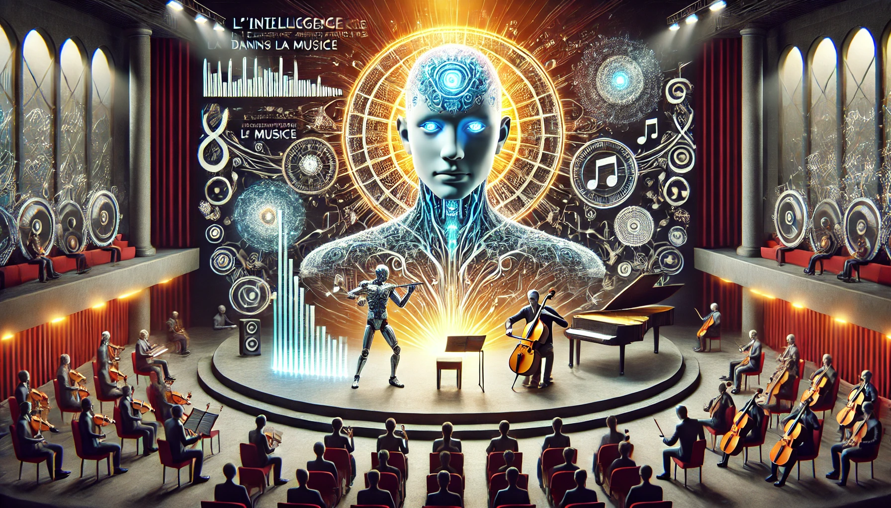

L'évolution du monde de la musique avec l'intelligence artificielle
Musique et intelligence artificielle : liaisons heureuses ou
dangereuses ?
Date : 1 février 2024
Note : ★★★★☆
Source : France Musique
Cet article de France Musique explore comment l'intelligence
artificielle bouleverse le secteur musical, avec des logiciels
de plus en plus performants qui créent de la musique sans
intervention humaine
L'intelligence artificielle dans la musique et sa révolution
Date : 4 septembre 2024
Note : ★★★★☆
Source : Sono Vente
Sono Vente présente les différentes applications de l'IA dans la
musique, ses avantages, ses limites et les enjeux éthiques
associés
La Musique et la Technologie : L’Impact des IA sur la Création
Musicale
Date : 3 avril 2024
Note : ★★★★★
Source : Ziked
Ce rapport souligne le taux élevé d'attaques par ransomware en
France en 2024, explorant les raisons derrière cette
augmentation et les secteurs les plus touchés.
L'intelligence artificielle générative en observation au Marché
des musiques actuelles
Date : 13 octobre 2024
Note : ★★★★★
Source : Le Monde.fr
Cet article relate les discussions tenues lors du Marché des
musiques actuelles (MaMA) en octobre 2024, où professionnels et
artistes ont débattu des impacts de l'IA générative sur la
filière musicale. Il met en lumière des outils comme Mngrs.ia et
Music-to-Pitch, qui automatisent des tâches telles que la
promotion et l'analyse musicale.
L'intelligence artificielle « menace l'avenir des créateurs »
dans la musique et l'audiovisuel

Date : 22 mai 2024
Note : ★★★★☆
Source : Le Monde.fr
Selon une étude commandée par la Confédération internationale
des sociétés d'auteurs et compositeurs (Cisac), les revenus des
créateurs dans la musique pourraient chuter de 24 % d'ici 2028
en raison de l'essor de l'IA générative. L'étude souligne que
cette technologie pourrait entraîner une substitution des œuvres
humaines par des contenus générés par IA.
IA : des résultats déjà stupéfiants dans l'image, la musique et
la vidéo

Date : 16 août 2024
Note : ★★★☆☆
Source : Le Monde.fr
Cet article explore les avancées de l'IA générative dans la
création de contenus visuels et sonores. Il décrit comment des
outils permettent de générer des images, des musiques et des
vidéos à partir de simples descriptions textuelles, rendant la
création de contenus plus accessible.
Musique et Intelligence Artificielle – DRANE

Date : 9 février 2025
Note : ★★★★★
Source : DRANE / Académie de Corse
Cet article explore comment l'IA révolutionne la création
musicale, de la composition à la production. Il met en avant des
exemples concrets, comme l'album "Hello World" de SKYGGE, fruit
d'une collaboration entre l'homme et la machine. Il aborde
également les implications pédagogiques et éthiques de
l'utilisation de l'IA en musique.
L'intelligence artificielle en musique : opportunité ou menace

Date : 24 janvier 2025
Note : ★★★★☆
Source : Magazine SOCAN
Cette vidéo présente les opinions de 17 artistes québécois sur
l'impact de l'IA dans la musique. Elle reflète les préoccupations
et les espoirs des créateurs face à cette technologie, notamment
en ce qui concerne les droits d'auteur et la créativité
artistique.
L'intelligence artificielle dans la musique : quand la machine
défie la créativité humaine

Date : 19 janvier 2025
Note : ★★★★☆
Source : JSS News
Cet article analyse comment l'IA bouleverse l'industrie musicale,
en générant des mélodies et des voix synthétiques. Il examine les
défis juridiques et créatifs posés par ces avancées
technologiques.
Intelligence artificielle et musique : une révolution ?
Date : 5 janvier 2025 (estimée)
Note : ★★★☆☆
Source : Big média
Cet article explore comment l'IA transforme le paysage musical, de
la composition à la production. Il met en lumière les opportunités
offertes par l'IA pour les artistes et les professionnels de la
musique.